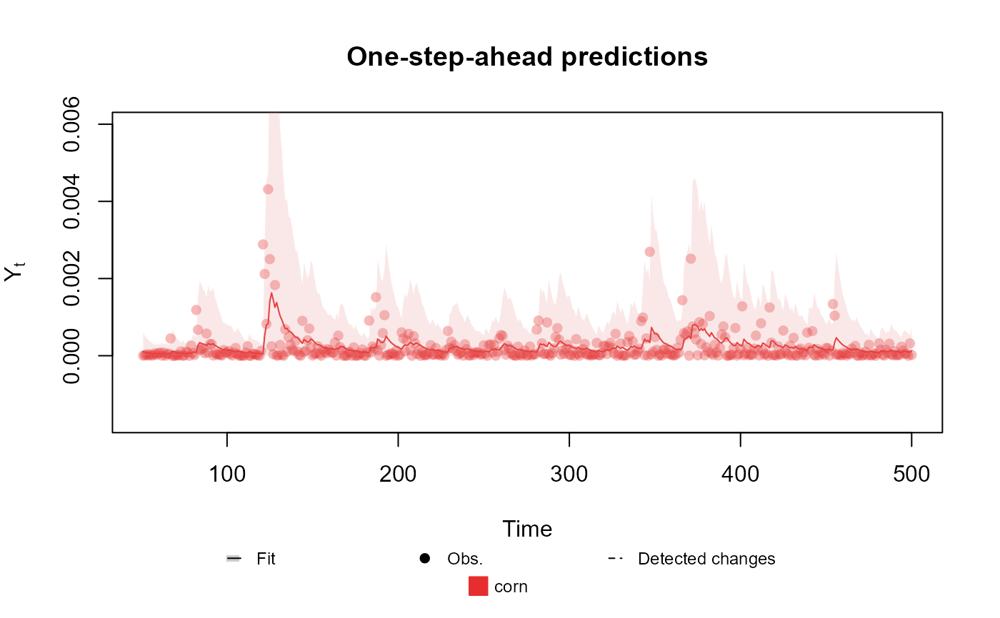

Creates an outcome with gamma distribution with the chosen parameters (can only specify 2).
Usage
Gamma(
phi = NA,
mu = NA,
alpha = NA,
beta = NA,
sigma = NA,
data,
offset = as.matrix(data)^0
)Arguments
- phi
character or numeric: Name of the linear predictor associated with the shape parameter of the gamma distribution. If numeric, this parameter is treated as known and equal to the value passed. If a character, the parameter is treated as unknown and equal to the exponential of the associated linear predictor. It cannot be specified with alpha.
- mu
character: Name of the linear predictor associated with the mean parameter of the gamma distribution. The parameter is treated as unknown and equal to the exponential of the associated linear predictor.
- alpha
character: Name of the linear predictor associated with the shape parameter of the gamma distribution. The parameter is treated as unknown and equal to the exponential of the associated linear predictor. It cannot be specified with phi.
- beta
character: Name of the linear predictor associated with the rate parameter of the gamma distribution. The parameter is treated as unknown and equal to the exponential of the associated linear predictor. It cannot be specified with sigma.
- sigma
character: Name of the linear predictor associated with the scale parameter of the gamma distribution. The parameter is treated as unknown and equal to the exponential of the associated linear predictor. It cannot be specified with beta.
- data
numeric: Values of the observed data.
- offset
numeric: The offset at each observation. Must have the same shape as data.
Details
For evaluating the posterior parameters, we use the method proposed in ArtigokParametrico;textualkDGLM.
For the details about the implementation see ArtigoPacote;textualkDGLM.
See also
Other auxiliary functions for a creating outcomes:
Multinom(),
Normal(),
Poisson(),
summary.dlm_distr()
Examples
structure <- polynomial_block(mu = 1, D = 0.95)
Y <- (cornWheat$corn.log.return[1:500] - mean(cornWheat$corn.log.return[1:500]))**2
outcome <- Gamma(phi = 0.5, mu = "mu", data = Y)
fitted.data <- fit_model(structure, corn = outcome)
summary(fitted.data)
#> Fitted DGLM with 1 outcomes.
#>
#> distributions:
#> corn: Gamma
#>
#> ---
#> No static coeficients.
#> ---
#> See the coef.fitted_dlm for the coeficients with temporal dynamic.
#>
#> One-step-ahead prediction
#> Log-likelihood : 3508.409
#> Interval Score : 0.00197
#> Mean Abs. Scaled Error: 0.93721
#> ---
plot(fitted.data, plot.pkg = "base")
